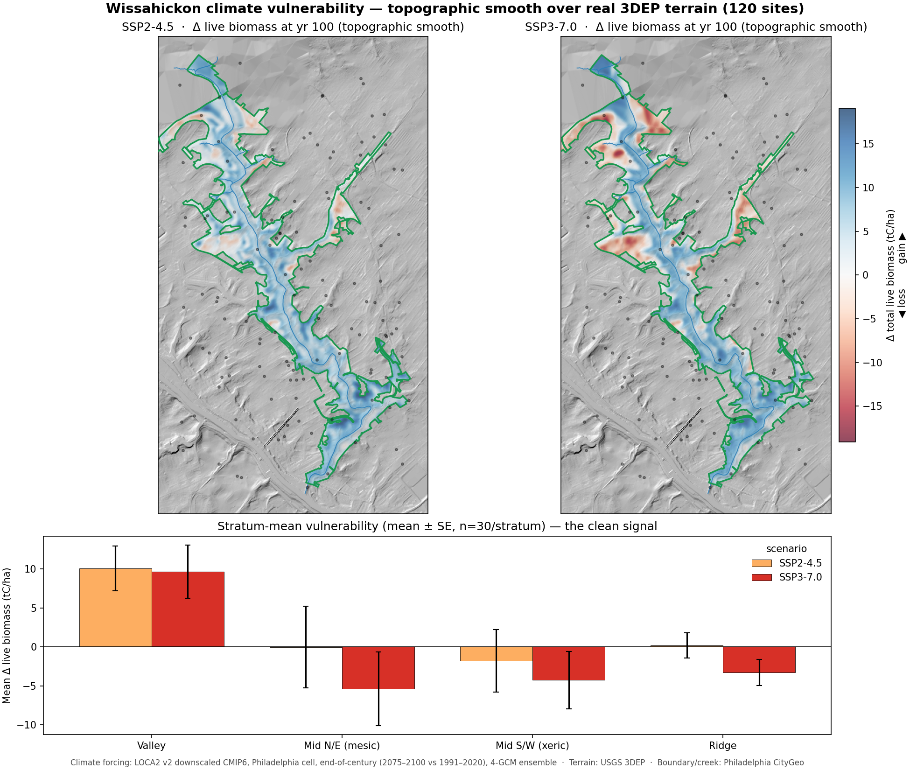

A forest model run across Wissahickon Valley Park answers a question an inventory can't: where will the forest gain or lose live biomass by the end of the century — and which stands are most exposed. Each sampled site is forecast 100 years forward under two emissions pathways, then mapped over the park's real topography so the pattern reads against the terrain that drives it.

Projected change in total live biomass at year 100 (blue = gain, red = loss) under a moderate (SSP2-4.5) and a high (SSP3-7.0) emissions pathway, smoothed over USGS 3DEP terrain. The lower panel summarizes the signal by topographic stratum — valley, mid-slope, and ridge. Sheltered valley bottoms stay the most productive, while exposed ridge and upper-slope stands carry the steepest projected losses, sharpening under the hotter pathway. Climate forcing: LOCA2-downscaled CMIP6 (4-GCM ensemble, end-of-century vs. 1991–2020). Built from open data — no ground inventory required.
This is the woodland & natural-area companion to the per-tree work: instead of scoring today's inventory, it forecasts stand-level composition and biomass decades out, so park stewards can target monitoring and planting where the forest is most likely to change. The same engine runs for any forested parcel.
Talk through a forecast for your park →
Prefer email? ann@raihoconsulting.com